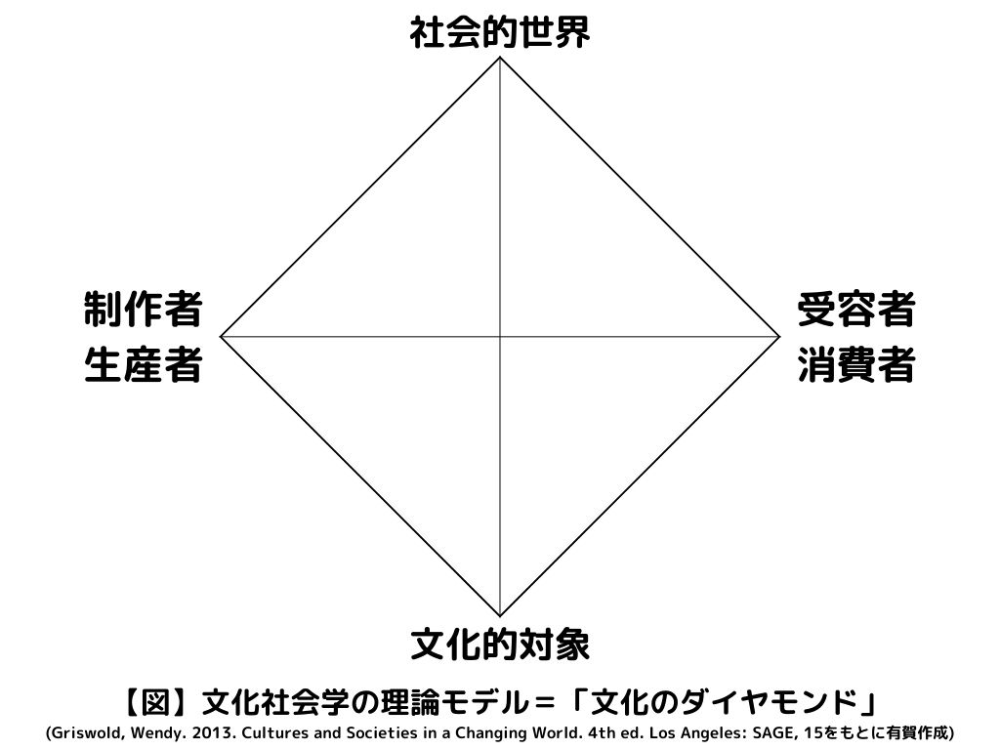

flowchart LR 1["誰が？<br><br>送り手"] 2["何を語るのか？<br><br>内容"] 3["どんなチャンネルで？<br><br>メディア"] 4["誰に？<br><br>受け手"] 5["どのような効果で？<br><br>効果"] 1-->2-->3-->4-->5
背景・目的
- このページは2025年度に「文化現象のメディア表象・受容の社会学的分析」という題目の卒論演習を担当するにあたって、ノウハウやメモや文献を寄せ集めたものである。
- 学生には「道具箱」として使えるようなリソースがあると有益だろうというのと、自分も一度指導のための頭の整理がしたいという理由で準備した。
- あくまで2025年現在の、筆者の経験と知識にもとづくものだが、それなりに使えればそのうち他の場面でも運用したり修繕して使い続けるかもしれない。
- あくまで参考資料であり、指導は基本的に個別対応のかたちで行う。万能薬でも特効薬でもないので、そのつもりで参照すること。
＜ 用法用量を守って正しくお使いください！！！
卒論演習の概要
- 趣旨：文化現象のメディア表象・受容の社会学的分析
- 特定の文化現象に関するメディア表象・受容の社会学的分析に取り組む卒業研究を扱う。
- トピック：メディアに関係する文化現象全般
- 教員は特にエスニシティに関連するトピックを専門とするが、ジェンダー、セクシュアリティ、障害、ファッション、音楽、食事、スポーツ、芸能、ファンダム、友人関係など広義の文化現象に関連していれば構わない。
- メディアの表象に関する研究か、メディアの受容に関する研究のどちらかであればよい。
- 方法・アプローチ：表象と受容の分析
- メディア研究は一般にメディアの生産・表象・受容という3つの局面に照準するが1、このゼミでは後2者を扱う。
- 表象・コンテンツを分析する
- 新聞、雑誌、テレビなどのマスメディアのデータベースが近年発達していることをふまえ、これらのデータベースを活用しながら様々なコンテンツの内容を調査・分析する。
- 受容・オーディエンスを分析する
- インターネットやソーシャルメディアの普及をふまえ、動画やポストに関する分析も扱う。
- 表象・コンテンツを分析する
- 量的手法と質的手法の如何は問わず、研究目的・資源に応じて決める。
- メディア研究は一般にメディアの生産・表象・受容という3つの局面に照準するが1、このゼミでは後2者を扱う。
文化社会学・メディア社会学の理論枠組
社会学一般がそうであるように、文化社会学・メディア社会学にもさまざまな理論や方法があるが、とくに有力でよく参照されるものを紹介しておく。機械的に説明・応用する必要があるのではなく、むしろ自分が関心のある現象をどんな観点から取り上げられるかを考えるときに道に迷わないための指針として使うほうがよい。
コミュニケーション・モデル
著名な政治学者であり、実証的コミュニケーション研究の成立に大きな役割を果たしたことで知られるH. Lasswellが提示した。2
Lasswell自身の説明は以下の通り。
コミュニケーションのプロセスを科学的に研究する場合、これらの疑問のどちらか一方に集中する傾向がある。「誰」、つまり送り手を研究する学者は、コミュニケーションという行為を開始し、導く要因に注目する。私たちはこの研究分野をコントロール分析と呼んでいる。「何を語るのか」に焦点を当てる専門家は、内容分析を行う。主にラジオ、報道、映画、その他のコミュニケーション・チャンネルに注目する人たちは、媒体分析を行っている。メディアによってリーチされる人々に主な関心がある場合は、オーディエンス分析と呼ばれる。問題がオーディエンスへの影響であれば、効果分析である。3
文化のダイヤモンド
これは文化と社会の関係を理解するために以下の4項目を設定し、それぞれの間を線で結んだもの。著名な文化社会学者であるW. Griswoldが提示した。
- 文化的対象 Cultural Object：生産・流通・使用の対象になるシンボル
- 制作者 Creator：文化的対象を生産・発信する主体
- 受容者 Receiver：文化的対象を使用・解釈・経験する主体
- 社会的世界 Social World：全体社会の制度・構造・文脈

私たちは、対象の特徴を特定し、それがその文化圏の他の対象物とどのように似ていて、他の対象物とはどのように違うのかを明らかにする必要がある。誰がそれを作り（作り、形成し、言い）、誰がそれを受け取った（聞いた、見た、信じた）のかを考える必要がある。例えば、社会的世界と制作者の関連について、この社会ではどのようにしてある種の人々がこの種の文化的対象を制作するようになり、他の人々はそうならないのか？(例えば、ある種の文化的対象を制作することから、女性がしばしば排除されてきたことを考えてみよう）。文化的対象物とオーディエンスの関連について、ある文化的対象物はどのようにオーディエンスに届き、他の文化的対象物は届かないのか。(例えば、出版されることのない詩や、制作されることのない演劇について考えてみよう。） ダイヤモンドの中の具体的な点とリンクを理解すれば、その文化的対象について社会学的な理解ができたと言える。さらに、その文化的対象がその文脈にどのように適合しているかを感じ取れば、文化全体を理解する道が開けてくる。 5
こうした図式を頭に入れておくと、「いま自分がなにをやりたいのか」「自分の研究にはどんな貢献がありそうか」を整理するのに役立つ。6つの線分のどれを扱うのでもよいので、折に触れて参照するのを勧める。
卒論の執筆
卒論の指南書
そもそも卒論ってどう書くのか、研究計画はどうやって立てるのかについては以下が参考になる。
- 明治学院大学「卒業論文執筆の手引き」
- 藤田真文，2016，『第2版 メディアの卒論：テーマ・方法・実際』ミネルヴァ書房．
- 小熊英二，2022，『基礎からわかる論文の書き方』講談社．
- 戸田山和久，2022，『最新版 論文の教室：レポートから卒論まで』NHK出版．
- 麦山亮太，2025，「Rによる社会調査データ分析の手引き」（https://ryotamugiyama.github.io/seminar_sociology_r/）
論文のフォーマット
論文のフォーマットには色々あるが、もっともオーソドックスなのはIMRAD（Introduction, Methods, Results, and Discussion）と呼ばれるものである。図解すれば以下のようになる。
flowchart LR
classDef default fill:#ffffff,stroke:#000000,stroke-width:1px;
A["序論<br>（Introduction）<br>研究の背景・先行研究<br>研究目的や問い"] --> B["方法<br>（Methods）<br>調査対象<br>データの収集・分析方法"]
B --> C["結果<br>（Results）<br>分析の知見<br>仮説の検証結果"]
C --> D["考察<br>（Discussion）<br>結果の整理と考察<br>限界や今後の課題"]
A:::intro
B:::method
C:::result
D:::discussion
classDef intro fill:#fce5cd,stroke:#cc0000,stroke-width:2px;
classDef method fill:#d9ead3,stroke:#38761d,stroke-width:2px;
classDef result fill:#cfe2f3,stroke:#0b5394,stroke-width:2px;
classDef discussion fill:#ead1dc,stroke:#741b47,stroke-width:2px;
あくまで一般的なモデルであって絶対にこうしなければならないというものではない。社会学系の論文では、特に、「序論」と「方法」の間に「先行研究レビュー」を置いて、5ステップにすることも多い。
主要文献
卒論の場合、先行研究のレビューでは定番の教科書がかなり有用であることが多い。どんなのが定番かについては、以下に詳しい。
大久保遼，2023，「補章1 メディア研究を設計する」『これからのメディア論』有斐閣．
念のために分野別に選別するなら、以下が有用である（日進月歩な領域なので適宜更新する）。網羅的でも体系的でもないので、別途自分で調べたり教員に相談すること。
メディア社会学全般
メディア研究に関する教科書はかなりたくさんあるが、ここでは特に社会学に近いものを扱っている。テーマ設定の段階で悩んでいる場合、これらを物色することも有力なアプローチとなる。
- 藤田真文，2016，『第2版 メディアの卒論：テーマ・方法・実際』ミネルヴァ書房．
- 井川充雄・木村忠正編，2022，『入門メディア社会学』ミネルヴァ書房．
- 石田佐恵子・岡井崇之編，2020，『基礎ゼミメディアスタディーズ』世界思想社．
- 李光鎬・渋谷明子編，2021，『改訂版 メディア・オーディエンスの社会心理学』新曜社．
- 浪田陽子・福間良明編，2021，『第2版 はじめてのメディア研究：「基礎知識」から「テーマの見つけ方」まで』世界思想社．
- 山腰修三・大石裕・李光鎬・鈴木秀美・烏谷昌幸・山本信人，2017，『入門メディア・コミュニケーション』慶應義塾大学出版会．
文化社会学全般
「総論」というよりは「各論」のまとめにあたる文献が多い。これらから卒論の題材を探すのも手だろう。
- 粟谷佳司・太田健二編，2019，『表現文化の社会学入門』ミネルヴァ書房．
- グリスウォルド W，1998，『文化のダイヤモンド：文化社会学入門』玉川大学出版部．
- 井上俊・長谷正人編，2010，『文化社会学入門：テーマとツール』ミネルヴァ書房．
- 井上俊・伊藤公雄編，2009，『ポピュラー文化』世界思想社．
- 井上俊・伊藤公雄編，2009，『文化の社会学』世界思想社．
- 高野光平・加島卓・飯田豊編，2023，『新版 現代文化への社会学：90年代と「いま」を比較する』北樹出版．
- 辻泉・南田勝也編，2008，『文化社会学の視座：のめりこむメディア文化とそこにある日常の文化』ミネルヴァ書房．
- 吉見俊哉，2018，『現代文化論：新しい人文知とは何か』有斐閣．
消費社会論
- ミラー，ダニエル，2022，『消費は何を変えるのか：環境主義と政治主義を越えて』法政大学出版局．
- 貞包英之，2023，『消費社会を問いなおす』筑摩書房．
- 井上俊・伊藤公雄編，2009，『メディア・情報・消費社会』世界思想社．
出版メディア
- 佐藤卓己，2018，『新版 現代メディア史』岩波書店．
- 川井良介・吉田則昭・植村八潮・木下修・湯浅俊彦・塚本晴二朗・諸橋泰樹・星野渉，2012，『出版メディア入門』日本評論社．
- 日本出版学会編，2022，『パブリッシング・スタディーズ』印刷学会出版部．
- 吉田則昭編，2017，『増補版 雑誌メディアの文化史：変貌する戦後パラダイム』森話社．
- 貞包英之，2021，『サブカルチャーを消費する：20世紀日本における漫画・アニメの歴史社会学 1920-2021』玉川大学出版部．
ソーシャルメディアとデジタルメディア
- 土橋臣吾・南田勝也・辻泉編，2017，『第3版 デジタルメディアの社会学: 問題を発見し、可能性を探る』北樹出版．
- 辻泉・南田勝也・土橋臣吾，2018，『メディア社会論』有斐閣．
- 松井広志・岡本健編，2021，『ソーシャルメディア・スタディーズ』北樹出版．
- 岡本健・田島悠来編，2020，『メディア・コンテンツ・スタディーズ：分析・考察・創造のための方法論』ナカニシヤ出版．
ジェンダーとメディア
- 林香里・田中東子編，2023，『ジェンダーで学ぶメディア論』世界思想社．
- 田中東子編，2021，『ガールズ・メディア・スタディーズ』北樹出版．
- 藤田結子，2022，「メディアにおけるジェンダー表象」井川充雄・木村忠正編『入門メディア社会学』ミネルヴァ書房，178–93．
- 田中東子，2022，「メディアとジェンダー」高橋恵子・大野祥子・渡邊寛編『ジェンダーの発達科学』新曜社，181–94．
エスニシティとメディア
- 有賀ゆうアニース，2024，「広告表現とエスニシティ：マジョリティ・マイノリティ関係の観点から」藤嶋陽子・宮﨑悠二・陳海茵編『広告文化の社会学：メディアと消費の文化論』北樹出版，10–19．
- 渋谷明子，2021，「エスニシティ」李光鎬・渋谷明子編『改訂版 メディア・オーディエンスの社会心理学』新曜社，120–39．
映像・放送メディア
- 長谷正人編，2016，『映像文化の社会学』有斐閣．
- 永田大輔・松永伸太朗編，2020，『アニメの社会学：アニメファンとアニメ制作者たちの文化産業論』ナカニシヤ出版．
- 藤田真文，2024，『テレビドラマ研究の教科書：ジェンダー・家族・都市』青弓社．
- 貞包英之，2021，『サブカルチャーを消費する：20世紀日本における漫画・アニメの歴史社会学 1920-2021』玉川大学出版部．
- 島崎哲彦・米倉律編，2018，『新放送論』学文社．
広告・広報
- 藤嶋陽子・宮﨑悠二・陳海茵編，2024，『広告文化の社会学』北樹出版．
- 伊吹勇亮・川北眞紀子・北見幸一・関谷直也・薗部靖史，2014，『広報・PR論：パブリック・リレーションズの理論と実際』有斐閣．
音楽
- 南田勝也・木島由晶・永井純一・小川博司・溝尻真也・小川豊武編，2019，『音楽化社会の現在：統計データで読むポピュラー音楽』新曜社．
- 森正人，2008，『大衆音楽史：ジャズ、ロックからヒップ・ホップまで』中央公論新社．
- 永冨真梨・忠聡太・日高良祐編，2023，『ポピュラー音楽：「聴く」を広げる・更新する』フィルムアート社．
- 戸ノ下達也編，2016，『「戦後」の音楽文化』青弓社．
ファンダム・ファン文化
- 東園子・岡井崇之・小林義寛・玉川博章・辻泉・名藤多香子，2007，『それぞれのファン研究：I am a fan』風塵社．
- 圓田浩二・池田太臣編，2022，『ポピュラーカルチャーからはじめるフィールドワーク：レポート・論文を書く人のために』明石書店．
- 田島悠来編，2022，『アイドル・スタディーズ：研究のための視点、問い、方法』明石書店．
- 瀬尾祐一，2020，「ファンカルチャーの理論：ファン研究の展開と展望」永田大輔・松永伸太朗編『アニメの社会学：アニメファンとアニメ制作者たちの文化産業論』ナカニシヤ出版，23–38．
ファッション
- 藤田結子・成実弘至・辻泉編，2017，『ファッションで社会学する』有斐閣．
- 蘆田裕史・藤嶋陽子・宮脇千絵編，2022，『ファッションスタディーズ：私と社会と衣服の関係』フィルムアート社．
データ
- ロイター・デジタルニュース リポート（いくつかバージョンあり）
- 藤竹暁・竹下俊郎，2018，『新版 図説日本のメディア：伝統メディアはネットでどう変わるか』NHK出版．
- 総務省『情報通信白書』（いくつかバージョンあり）
- NHK放送文化研究所の各種調査
- 青少年研究会の各種調査
メディアの社会調査の方法論
質的調査の方法論
- 本多真隆，2023，「歴史資料に社会を見出す」松木洋人・中西泰子・本多真隆編『基礎からわかる社会学研究法：具体例で学ぶ研究の進めかた』ミネルヴァ書房，79–100．
- 池上賢，2022，「メディア社会学における調査分析の基礎：メディアに関わる現象をいかに捉えるのか？」井川充雄・木村忠正編『入門メディア社会学』ミネルヴァ書房，142–58．
- 工藤保則・寺岡伸悟・宮垣元，2016，『質的調査の方法 ：都市・文化・メディアの感じ方』法律文化社．
- 前田拓也・秋谷直矩・朴沙羅・木下衆編，2016，『最強の社会調査入門：これから質的調査をはじめる人のために』ナカニシヤ出版．
- 圓田浩二・池田太臣編，2022，『ポピュラーカルチャーからはじめるフィールドワーク：レポート・論文を書く人のために』明石書店．
- 松木洋人，2023，「インタビュー調査によって得られた語りを分析する」松木洋人・中西泰子と本多真隆編『基礎からわかる社会学研究法：具体例で学ぶ研究の進めかた』ミネルヴァ書房，3–20．
- 野田潤，2023，「新聞・雑誌記事から社会を読み解く」松木洋人・中西泰子・本多真隆編『基礎からわかる社会学研究法：具体例で学ぶ研究の進めかた』ミネルヴァ書房，101–17．
- 田島悠来編，2022，『アイドル・スタディーズ：研究のための視点、問い、方法』明石書店．
量的調査の方法論
- 有馬明恵，2021，『第2版 内容分析の方法』ナカニシヤ出版．
- 藤田真文・岡井崇之編，2009，『プロセスが見えるメディア分析入門』世界思想社．
- 樋口耕一，2020，『第2版 社会調査のための計量テキスト分析：内容分析の継承と発展を目指して』ナカニシヤ出版．
- 毛塚和宏，2022，『社会科学のための統計学入門：実例からていねいに学ぶ』講談社．
- 牧野智和，2016，「「ほとんど全部」読む：メディア資料を「ちゃんと」選び、分析する」前田拓也・秋谷直矩・朴沙羅・木下衆編『最強の社会調査入門：これから質的調査をはじめる人のために』ナカニシヤ出版，175–86．
- 盛山和夫，2004，『社会調査法入門』有斐閣．
- 鈴木裕久・島崎哲彦編，2006，『新版 マス・コミュニケーションの調査研究法』創風社．
- 轟亮・杉野勇・平沢和司編，2021，『第4版 入門・社会調査法：2ステップで基礎から学ぶ』法律文化社．
ジャーナル
メディア研究の論文が載るジャーナルといえば結構あるが、メディア研究が主要に掲載されるかつ日本語で読めるものは限られている。以下にいくつか挙げておく。
- 『放送研究と調査』
- 『メディア研究』
データソース
以上を参考にトピックやケースやアプローチが定まってきたら、具体的にデータを取得する必要がある（理論研究でない限り）。データの取得方法はメディアとか現象の時代や形態によって千差万別なので基本的には個別に対応するが、とはいえある程度は「定番」があるので、以下にまとめておく。
レファレンス
そもそもデータベースで何を使えばいいのかは、トピックやメディアの形態や時代に依存する。教員に聞くのが一番手っ取り早いが、、以下のようなレファレンスを使うと便利である。
- 小林昌樹，2022，『調べる技術：国会図書館秘伝のレファレンス・チップス』皓星社．
- 小林昌樹，2024，『もっと調べる技術』皓星社．
- 国立国会図書館，2024，「リサーチ・ナビ」（https://ndlsearch.ndl.go.jp/rnavi）
メディアの形態はなんも決まってないけどとりあえず大雑把に調べたいという状態にある場合、国立国会図書館サーチが最も広範囲なデータベースとして使える。
新聞
新聞はデータベース化が進展しているかつデータが高度に構造化されているので、最もアクセシブルである。どれも大学のプロバイダ経由でアクセスできる。
| データベース | 説明 |
|---|---|
| 日経テレコン | 『日本経済新聞』のデータベース |
| ヨミダス | 『読売新聞』のデータベース |
| 朝日新聞クロスサーチ | 『朝日新聞』のデータベース |
| 毎索 | 『毎日新聞』のデータベース |
雑誌
新聞ほどではないがデータベースは充実している。Web OYA-bunkoを使うことが多いが、ほかにも優秀なものが多い。とくに歴史的な分析とかニッチな趣味・集団の分析には適している。
| データベース | 説明 |
|---|---|
| NDLサーチ | 出版物全般を検索可能。一部は全文検索も可能。 |
| NDL Ngram Viewer | 出版物全般における特定の語彙の頻度を測定する。数十年から数百年のスパンでの推移に関心がある場合に有用。 |
| Fujisan.co.jp | 国内の一般流通の雑誌全般のデータベース。網羅度は低いが、全文検索ができる。 |
| ざっさくプラス | 国内の一般流通の雑誌全般のデータベース。 |
| Web OYA-bunko | 国内の一般流通の雑誌全般のデータベース。網羅度は随一で、タグ検索もできる。 |
| Nikkei BP | 日本経済新聞グループの雑誌全般のデータベース。 |
| MagazinePlus | 国内の一般流通の雑誌全般のデータベース。 |
放送
活字メディアと比べると日本の放送メディアのデータベースは貧弱だと言われる。とはいえ、一部には民間もしくは公的機関による有益なデータベースも存在する。たとえば、特定のカテゴリーに属する人たちの出演頻度とか、特定のジャンルの番組の頻度を調べたいとき、特定の制作者にフォーカスした分析がしたいときなどに使える。
| データベース | 説明 |
|---|---|
| NHKクロニクル | 総合、教育（=Eテレ）、衛星放送（=BS1、BSプレミアム）の過去の全番組情報を網羅。 |
| TVガイドWeb | 2018年以後のTVガイド記事を収録 |
| テレビドラマDB | 2010年代以後の俳優・番組に関する放送データを収録 |
| TVでた蔵 | 過去数年のテレビ番組の出演者情報 |
| 放送ライブラリー | テレビ番組の情報 |
| ラジオドラマ資源 | ラジオドラマを収録 |
| Wikipedia | 「Category:各年のテレビドラマ」とか「Category:日本のクイズ番組」というように、ジャンルやサブジャンルに対応したカテゴリーに番組がケースとして収録されている |
人物
| データベース | 説明 |
|---|---|
| Wikipedia | カテゴリー別に有名人の情報を収集するのに便利。小林（2022）参照。網羅度は随一。 |
| WhoPlus | カテゴリー別に有名人の情報を収集するのに便利。小林（2022）参照。 |
インターネット
日本では研究例が少ないが、インターネットのコンテンツやポストをデータとして使うこともある。ある特定の社会現象への公共的な関心を調べたいとか、ある特定のコンテンツの内容、またそうしたコンテンツへのユーザの反応を調べたいとかいった場合にはこうしたデータが用いられる。
ネット上のコンテンツをデータとして取得するには、API、スクレイピング、マニュアルの3通りがある6。ここではこの細かい違いは無視して、どのツールをつかえばどんなメディアからどんな情報が得られるかを列挙的に紹介する。
| ツール | 説明 |
|---|---|
| YouTube Data Tools | 任意のチャンネルの情報全般、任意のキーワードの検索結果、任意の動画のコメント全体などを取得できる。 |
| exportcomments.com | Facebook, Instagram, Twitter, YouTube, TikTokの特定のポストへのコメントを CSV / Excel で取得。回数と量に制限あり。 |
| Google トレンド | 2004年から現在までの検索のボリュームを取得することができる。複数のキーワードを検索すれば比較も可能。検索の相対的割合であって絶対量ではないので解釈に工夫が必要。 |
| Wikipedia ページビュー | Google トレンドと並んで使えるのがWikipediaの閲覧数。単純閲覧数を出力するので解釈がしやすい。ただし記事化されていないレベルの知名度のトピックや人物には使えない。 |
番外編
あまり使うことはないと思うが、国立女性教育会館（NWEC）が運営している文献情報データベースはジェンダー関連のトピックを新聞・雑誌・ミニコミまで網羅してかなり広く検索できる。地味に有用である。
分析ツール
分析ツールは利用者の技能に強く依存する。学部レベルではまったく使わない（ワードとかエクセルだけでやり抜く）のでもまったく問題ないので、ここでは詳しく触れない。以下はテキストデータの量的分析のために使われる主なツールの列挙である。
| ツール | 説明 |
|---|---|
| R | 統計解析に特化したプログラミング言語。自然言語分析にも使われる。 |
| Python | プログラミング言語。自然言語分析にも使われる。 |
| KH coder | 計量テキスト分析またはテキストマイニングのためのソフト。無料プランは回数・量に制限あり。 |
| AIテキストマイニング | ユーザーローカル社が提供する生成AIによるテキストマイニングツール。登録すれば無料で使える（回数・量に制限あり）。「新規作成」から一般的なテキスト分析をするのもありだし、「AIアフターコーディングツール 高機能版」でAIによるアフターコーディングを行うのもあり。 |
生成AIを有効活用しよう
日進月歩の領域であるので、最新の情報は各自で調べてほしいが、もはやまったく使わないのはもったいない段階に入っているのはたしか。
主な用途
卒業論文執筆におけるAIツール活用
以下にいくつかの生成AIの活用例を挙げておく。あくまで参考であり、実際に使う場合は自分の研究テーマやデータに合わせて柔軟にカスタマイズする必要がある。
| 機能 | ツール | 具体的な使い方 |
|---|---|---|
| テーマ・問いの探求・具体化 | 様々 | 自身のリサーチクエスチョンを明確にするためのブレインストーミングや、多様な視点からの問いの設定を補助する。 |
| 論文アウトラインの検討 | 様々 | リサーチクエスチョンや収集した文献情報を基にアウトラインの提案をさせる。 |
| 基本的な文献検索 | Perplexity AI | 論文テーマに関連するキーワードや問いを入力することで、関連性の高い論文や記事、書籍などの文献情報を効率的に検索できる。出典元が明記されるため、情報の信頼性を確認しやすい。 |
| 詳細な文献探索 | GeminiやChatGPTのDeep Search | 通常の検索では見つけにくい、特定の概念に関する詳細な議論や、ニッチな研究分野の文献を探す。複数のキーワードを組み合わせた複雑なクエリにも対応し、関連性の高い情報を深掘りできる。 |
| 外国語文献の読解 | DeepL | 英語など外国語で書かれた文献を日本語に翻訳する際に使う。学術的な文章の翻訳精度が高いとされており、専門用語なども比較的正確に訳せる。ただし、翻訳結果のみに依拠せず、原文と照らし合わせながら内容を理解することが欠かせない。 |
| 質的研究データの分析補助 | （参考）ユーザーローカル「AIテキストマイニング」 | インタビューデータや質的なアンケート回答、フィールドワークのメモなどのテキストデータをAIで分析し、出現頻度の高い単語や共起表現、感情などを抽出するのに使用できる。 |
| 文章表現の改善と誤字脱字チェック | （参考）ユーザーローカル「文章校正AI」 | 執筆した文章の文法ミス、誤字脱字、不自然な表現などをチェックし、修正案を提示してくれる。ただし、内容の妥当性や論理構成は自身で責任を持つ必要がある。 |
| 長文の要約と情報整理: | Google NotebookLM | 複数の文献や資料をアップロードし、その内容をAIに要約させることができる。情報を効率的に分類・把握・取捨選択するのに効果的。 |
AIツール利用上の注意点（使用する場合は必読！）
- AIの出力はあくまで参考情報である。情報の真偽や内容の妥当性は必ず自身で確認しなければならない。論文が論文である限り、書き手に責任が帰属することは避けられない。
- AIが生成した文章をそのまま論文として使用することは剽窃にあたる。出力結果を吟味・加工・修正する工程を省いてはならない。
- AIに機密情報や個人情報を入力してはならない。モデルにもよるが情報漏洩のリスクが大抵は付随する。漏れても問題ない情報だけを入力すべきである。
- 使用するAIツールの利用規約を確認しておくことが望ましい。
研究事例と研究デザイン
以上のリソースで要領よく研究計画通り進捗すれば問題ないが、実際に調査や執筆を本格的に進めるよりも前に「こうなったらいいな」という青写真を描いておくのが大事である。以下は特に筆者が論文として書いた経験のある内容に絞ったもの。
表象・コンテンツの内容を通時的に分析する
通時的分析とは、ある特定の集団とか現象についてのメディアの内容の量や質がどう推移してきたのかを検討すること。特定の言葉の用法、特定のジャンルにおける特定の文化形態の変遷などを扱う。
| 研究 | 分析の焦点 | データ（ソース） |
|---|---|---|
| 桶川（2008）7 | 「モテ」の語られ方 | 若者雑誌の本文 |
| 松井（2013）8 | 「癒やし」の語られ方 | 雑誌全般（Web-OYA bunko）の見出し |
| 牧野（2014）9 | 「人間力」の語られ方 | 男性向けビジネス雑誌 |
| 田中（2019）10 | 「貧困」の語られ方 | 雑誌全般（Web-OYA bunko）の見出し |
| 笹生（2021）11 | 外国のサッカーチームへのステレオタイプ | サッカー雑誌の本文 |
| 石井（2008）12 | ファッション関係で言及される地域・国 | 女性向けファッション誌の本文 |
| 西原（2025）13 | 女性向けマンガにおけるBL的な性関係の描写 | 女性向けBLコミック |
表象・コンテンツの内容を共時的に分析する
時期による比較は直感的に解釈しやすいが、それだけでなくある特定の時点における特定のメディアのジャンル、登場人物・出演者の属性・トピックの分布を記述するものも多い。この場合、単一のトピック・媒体・グループに照準するのはもちろん、それらの単位の間で比較を行うことも多い。
| 研究 | 分析の焦点 | データ（データソース） |
|---|---|---|
| 石川（2013）14 | 母親に対する役割期待 | 育児関連雑誌の見出し |
| 黄（2019）15 | 日韓における女性美の強調点の相違 | ファッション誌の広告 |
| 有賀（2023）16 | 「ハーフあるある」出演者の人種・性別 | TikTok動画 |
メディアの受容を分析する
メディア受容は質的手法による研究がかなりたくさんある。伝統的になされてきたのは、オーディエンスへの個人もしくはグループインタビュー、雑誌の読者投稿欄のテキスト分析など。
| 研究 | 対象 |
|---|---|
| 小泉（2007）17 | 世代別のポピュラー音楽視聴者へのインタビュー |
| 河津（2009）18 | 海外ドラマの視聴者へのインタビュー |
| 工藤（2010）19 | ファッション雑誌の読者投稿欄 |
| 嵯峨（2011）20 | 少女雑誌の読者投稿欄 |
| 佐々木（2012）21 | ファッション雑誌の女性読者へのインタビュー |
| 東（2015）22 | 宝塚歌劇団のファンの女性へのインタビュー |
| 大尾（2016）23 | ビジュアル系バンドのファンへのインタビュー |
| 栗原（2016）24 | 海外旅行経験のあるSNSユーザーへのインタビュー |
| 田島（2017）25 | アイドル雑誌の読者投稿欄 |
| 池上（2019）26 | 世代別のポピュラー漫画読者へのインタビュー |
表象・コンテンツ分析や質的な受容分析に比較すると、受容・消費の量的研究は手薄である。これはデータのアクセス性が主な原因だが、とはいえ、参考になる研究もある。最近は以前よりはデジタルデータの取得が簡便になったし、身近なトピックも扱いやすいので、トライする価値はある27。
| 研究 | 分析の焦点 | データ（データソース） |
|---|---|---|
| 志岐（2015）28 | SNS上でのテレビ番組への反応 | |
| 河野（2021b）29 | アスリートへのニュースサイト上での人種差別的コメント | Yahoo News |
| 河野（2021b）30 | スポーツ部活へのニュースサイト上でのコメント | Yahoo News |
残念ながら現在の研究ではきちんと活用されていないが、たとえば以下のようなツール・使い方が有用だろう。
- Wikipedia Pageviews Analysis：どんな記事がどんな頻度で閲覧されているのか？
- Google トレンド：どんなキーワードがどんな頻度で検索されているのか？
- export comments：どんな動画・ポストがどんなコメントを受けているのか？
Footnotes
Lindner, Andrew M. and Stephen R. Barnard, 2020, All Media Are Social: Sociological Perspectives on Mass Media, New York: Routledge.↩︎
Lasswell Harold Dwight. 1948. “The Structure and Function of Communication in Society.” Pp. 37–51 in The Communication of Ideas: A Series of Addresses, edited by Bryson L. New York: Institute for Religious and Social Studies.↩︎
Lasswell Harold Dwight. 1948. “The Structure and Function of Communication in Society.” Pp. 37–51 in The Communication of Ideas: A Series of Addresses, edited by Bryson L. New York: Institute for Religious and Social Studies, 37.↩︎
Hodkinson, Paul. 2024. Media, Culture and Society: An Introduction. 4th edition. London: SAGE, 4-5.↩︎
Griswold, Wendy. 2013. Cultures and Societies in a Changing World. 4th ed. Los Angeles: SAGE, 16.↩︎
これらの手法を専門的に学習するには、相当な時間的および認知的資源を要し、1年弱の期間でやるのはけっこうたいへんである。API、スクレイピングについては、IT業界に就職したいとか、統計・プログラミングスキルを習得したい学生はこうしたスキルがあって損はしないが、そこまでは教員による指導はしないので、自習が求められる。↩︎
桶川泰，2008，「親密性をめぐる「新たな不安」：雑誌記事における「モテる」「モテない」格差の説明原理」『ソシオロジ』52(3): 155–71．↩︎
松井剛，2013，「言語とマーケティング：「癒し」ブームにおける意味創造プロセス」『組織科学』46(3):87–99．↩︎
牧野智和，2014，「「人間力」の語られ方：雑誌特集記事を素材にして」『日本労働研究雑誌』56(9): 44–53．↩︎
田中祐児，2019，「現代の「貧困」はどのように語られてきたのか：雑誌記事タイトルの計量テキスト分析を通して」『東京大学大学院教育学研究科紀要』(59): 327–37．↩︎
笹生心太，2021，「スポーツ報道に見られるナショナルなステレオタイプ：サッカー専門誌に着目して」『年報社会学論集』2021(34): 84–95．↩︎
石井健一，2008，「日本人の欧米崇拝とアジア志向：ナショナリズム意識との関連」中村則弘・高橋基泰編『グローバリゼーションに対抗するローカル：相互補完の可能性』明石書店，2–29．↩︎
西原麻里，2025，『BLマンガの表現史：少年愛からボーイズラブジャンルへ』青弓社．↩︎
石川由香里，2013，「雑誌から読み解く育児する母親像：「よき母親」とセクシュアリティの両立可能性」『活水論文集健康生活学部編』56: 25–38．↩︎
黄順姫，2019，『身体文化・メディア・象徴的権力：化粧とファッションの社会学』学文社．↩︎
有賀ゆうアニース，2023，「だれが「ハーフ」としてソーシャルメディア上で語るのか：動画共有サイトTikTokにおける「ハーフあるある」動画の探索的内容分析」『メディア研究』103: 235–52．↩︎
小泉恭子，2007，『音楽をまとう若者』勁草書房．↩︎
河津孝宏，2009，『彼女たちの「Sex and the City」：海外ドラマ視聴のエスノグラフィ』せりか書房．↩︎
工藤雅人，2010，「「服飾雑誌」の歴史的成立：1950~60 年代の『装苑』の誌面構成と読者の変容に焦点を当てて」『マス・コミュニケーション研究』76: 157–76．↩︎
嵯峨景子，2011，「『女学世界』にみる読者共同体の成立過程とその変容: 大正期における「ロマンティック」な共同体の生成と衰退を中心に」『マス・コミュニケーション研究』78: 129–47．↩︎
佐々木孝侍，2012，「雑誌モデル・ファンのエスノグラフィー: 「読書」空間とガールズイベントをめぐる経験から」『マス・コミュニケーション研究』81: 163–80．↩︎
東園子，2015，『宝塚・やおい、愛の読み替え：女性とポピュラーカルチャーの社会学』新曜社．↩︎
大尾侑子，2016，「ファン・アイデンティティの宣言に伴うジレンマと処理パターン：ヴィジュアル系ファンへの質的調査をもとに」『ソシオロゴス』40: 111–32．↩︎
栗原美紀，2016，「観光対象選択におけるSNSの役割：台湾・九份を事例として」『年報社会学論集』(29): 128–39．↩︎
田島悠来，2017，『「アイドル」のメディア史：『明星』とヤングの70年代』森話社．↩︎
池上賢，2019，『“彼ら”がマンガを語るとき：メディア経験とアイデンティティの社会学』ハーベスト社．↩︎
卑近な例をあげるなら、東洋水産のカップ麺「赤いきつね」のネットCMがSNS上で「炎上」したとされる事例についてコメントを計量的に分析したものなどは興味深いだろう。↩︎
志岐裕子，2015，「テレビ番組を話題としたTwitter上のコミュニケーションに関する検討」『メディア・コミュニケーション』65: 35–148．↩︎
河野洋，2021a，「アスリートに向けられるインターネット上のネガティブなコメントの実態」『日本体育・スポーツ・健康学会予稿集』71: 244．↩︎
河野洋，2021b，「コロナ禍のスポーツに関するインターネットコメントの分析：高校野球を事例として」『福祉健康科学研究』16: 149–57．↩︎